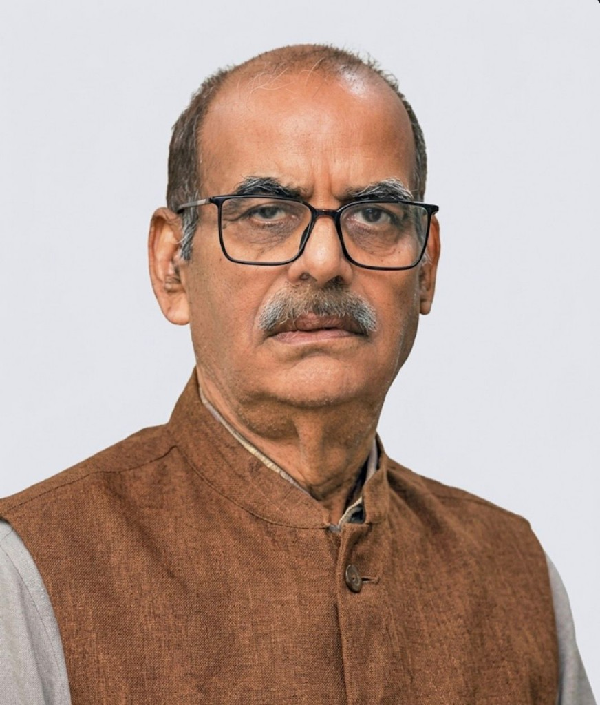

Ms. Bindu Singh
Philanthropist & Managing Trustee
अप्प दीपो भव — Be Your Own Light.
Tathagat Trust is a charitable organization founded in 2010, based in Patparganj Industrial Area, New Delhi, committed to education, skill development, and inclusive growth for India's most marginalized communities.
The Trust works across education, tribal upliftment, skill development, and literary preservation in Uttar Pradesh, Chhattisgarh, and Delhi-NCR. Its two-pronged strategy is creating awareness — engaging parents and children toward constructive socio-economic opportunities — and providing direct support: education, technical skills, career counseling, entrepreneurial and employment pathways.
The work began with family/friends support and rental income. Accounts are audited; ITR is filed regularly. Individual and Corporate Social Responsibility (ISR + CSR) work together. Education and vocational skills are held as the lasting solution to marginalization, crime, and unrest — tools for breaking intergenerational cycles with empowerment and dignity.

Photo: Dr. N.P. Singh, IAS (Retd.)Sanrakshak (Patron) · Executive Chairman, Bhartiya Shiksha Board (Govt. of India / Patanjali Yogpeeth)
Dr. N.P. Singh, IAS (Retd.) is a distinguished administrator, educationist, and Hindi literary figure. As Sanrakshak of Tathagat Trust, he has shaped its work in education, tribal upliftment, skill development, and the preservation of Indian languages and knowledge traditions.
In 2000 he led the Naini Lake cleaning initiative. He founded Tathagat Industrial Training Institute (ITI) on the Sonbhadra–Mirzapur border (est. 2011), initiated the Musahar Community Scholarship Program, and, as District Magistrate of Shamli, launched the Bawaria Community Social Rehabilitation programme post-2013 — addressing a community denotified in 1952 and long burdened by the ex-“criminal tribe” stigma.
He has been associated with Apna Ghar Ashram: the Muzaffarnagar branch with Dr. N.P. Singh & Vinod Goyal, and the Shamli branch inaugurated 2014 by Dr. Singh & Rajeshwar Bansal. Under his guidance the Trust also functions as a national literary institution, instituting the Prof. Ramdarsh Mishra Smriti Tathagat Samman (Hindi), the Rahul Sankrityayan Lokbhasha Bhojpuri Tathagat Samman, and the Bhagwati Lal Sen Lokbhasha Chhattisgarhi Tathagat Samman. He was Special Guest at the Chhattisgarhi honour ceremony in Raipur.
He currently serves as Executive Chairman, Bhartiya Shiksha Board (Govt. of India / Patanjali Yogpeeth).
Philanthropist & Managing Trustee
Trustee (Apna Ghar Ashram)
Ex-Deputy Secretary, Noida Authority
Secretary, Noida Lok Manch
Bikanerwala
Trustee
Social Worker
Supreme Court Advocate On-Record
Supreme Court Advocate On-Record
Social Worker